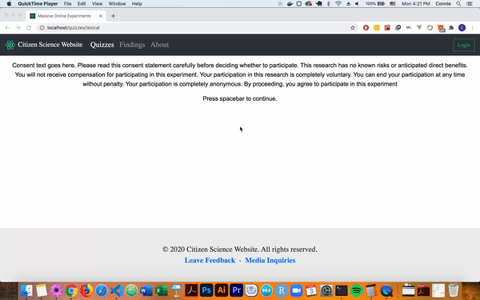

Lexical decision template
To install this experiment template, use the command pushkin install experiment, then select lexical.

config.js
When correctiveFeedback is set to true, the bounding box will change color based on the participant's response - green meaning correct, red meaning incorrect. If set to false, the box remains black.
stim.js
word_1: Word displayed in the top of the fixation box
word_2: Word displayed in the bottom of the fixation box
both_words: If true, 'Y' is the correct answer (both word_1 and word_2 are real words). If false, 'N' is the correct answer (one or both of word_1 and word_2 are not real words)
related: If true, the words are semantically related to each other (e.g. leaf and tree). If false, the words are unrelated (e.g. sock and tree).
Example: Customizing a lexical decision experiment
Finding experiment files to modify
If you have installed an experiment using the lexical decision experiment template and called it lex, you should have a directory called lex in your experiments folder. This directory should be structured like this:
lex
├── api controllers
├── config.yaml
├── LICENSE
├── migrations
├── README.md
├── web page
└── worker
In order to customize your simple lexical decision experiment, you will need to access two files, config.js and stim.js. These files can be found in web page/src/, a directory that looks like this:
src
├── assets
├── config.js
├── consent.js
├── debrief.js
├── experiment.js
├── index.js
└── stim.js
Modifying the experiment configuration and stimuli files
Modifying config.js
This file controls the aesthetics of your experiment, including font color, font size, and font family. If you wanted to set the font color to red, set the font size to 22px, and set the font family to a monospace font such as Courier New, you would modify config.js as follows:
// Custom stylin'
var experimentConfig = {
fontColor: "red",
fontSize: "22px",
fontFamily: "'Courier New', Courier, monospace",
correctiveFeedback: true,
};
export default experimentConfig;
You'll notice that 'Courier New' is not fontFamily's only specification. This is because it's important to list backup fonts in case your preferred font can't be loaded. You can read more about this practice here and see other CSS font combination ideas here. You'll also notice that correctiveFeedback is set to true. You can change this to false so that participants don't receive any feedback.
After making any desired changes, run pushkin prep and pushkin start to see the updates.
Modifying stim.js
This file controls the stimuli presented to participants. It specifies (1) the two words presented on the screen (word_1 and word_2), (2) whether both words are true words (both_words), and (3) whether the two words are related to each other (related).
Say you have created the following table of stimuli for your experiment.
| word_1 | word_2 | both_words | related |
|---|---|---|---|
| FLOWER | PETAL | true | true |
| BALL | NET | true | true |
| DOG | LEASH | true | true |
| COMB | BRUSH | true | true |
| BABY | BEAN | true | false |
| CAGE | FERN | true | false |
| DOG | FLOUR | true | false |
| GOAT | SAND | true | false |
| VASE | VATE | false | false |
| ARM | ARL | false | false |
| COAT | COET | false | false |
| HAIR | HAIP | false | false |
| HAME | HAMA | false | false |
| DAKE | GRAKE | false | false |
| CLEB | CLED | false | false |
| AFTY | AFLY | false | false |
In order to use these stimuli in the lexical decision experiment, you must use a table-to-JSON converter such as this one to format it correctly for jsPsych.
Once it has been converted, paste the JSON into the stim.js file, which should now look like this:
// Example stimuli
const stimArray = [
{ word_1: "FLOWER", word_2: "PETAL", both_words: true, related: true },
{ word_1: "BALL", word_2: "NET", both_words: true, related: true },
{ word_1: "DOG", word_2: "LEASH", both_words: true, related: true },
{ word_1: "COMB", word_2: "BRUSH", both_words: true, related: true },
{ word_1: "BABY", word_2: "BEAN", both_words: true, related: false },
{ word_1: "CAGE", word_2: "FERN", both_words: true, related: false },
{ word_1: "DOG", word_2: "FLOUR", both_words: true, related: false },
{ word_1: "GOAT", word_2: "SAND", both_words: true, related: false },
{ word_1: "VASE", word_2: "VATE", both_words: false, related: false },
{ word_1: "ARM", word_2: "ARL", both_words: false, related: false },
{ word_1: "COAT", word_2: "COET", both_words: false, related: false },
{ word_1: "HAIR", word_2: "HAIP", both_words: false, related: false },
{ word_1: "HAME", word_2: "HAMA", both_words: false, related: false },
{ word_1: "DAKE", word_2: "GRAKE", both_words: false, related: false },
{ word_1: "CLEB", word_2: "CLED", both_words: false, related: false },
{ word_1: "AFTY", word_2: "AFLY", both_words: false, related: false },
];
export default stimArray;
Run pushkin prep and pushkin start again, and your experiment should be ready to go!